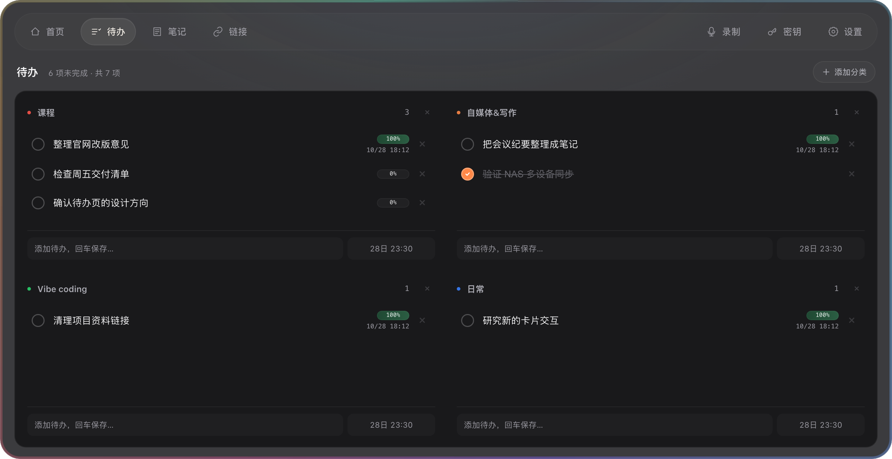
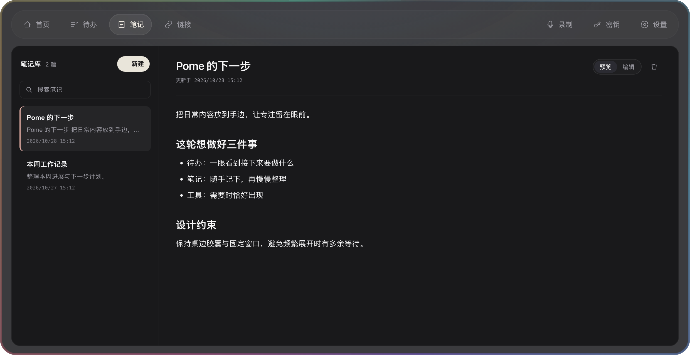
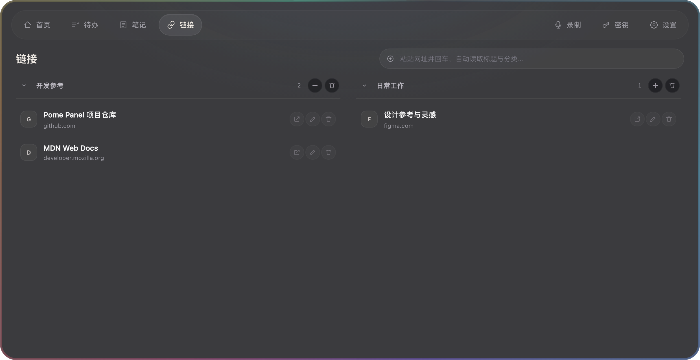
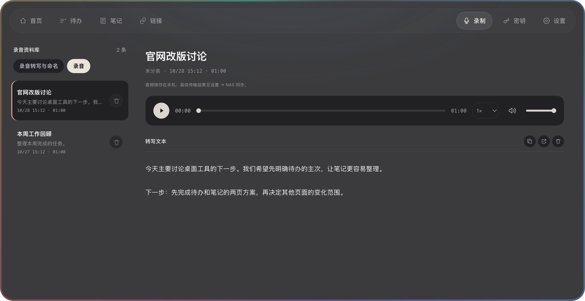
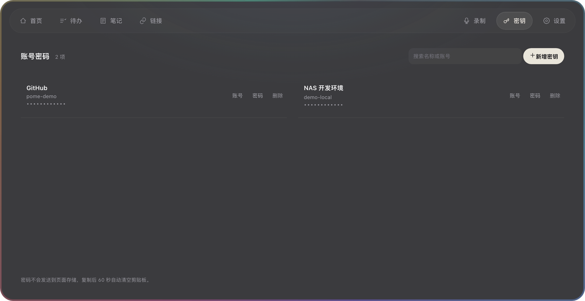
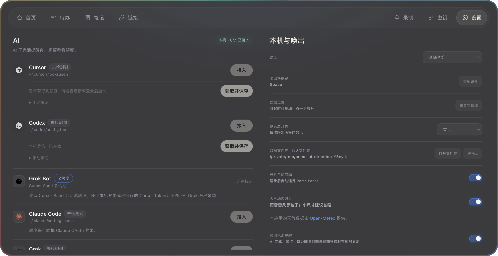

2026-10-28 · 当前源码的隔离 Electron 实拍 · 示例内容 · 1240 × 638 CSS 视口、DPR 2

保留分类，轻分隔工作面、未完成统计、顶栏添加分类。

轻量索引与平静正文，标题去重保留 Markdown 和交互链接。

轻分组资料架、清晰域名与统一行内操作。

轻索引、同风格真实播放器，支持定位、音量与倍速。

查询与复制优先，新增表单按需打开。

常用入口优先，减轻卡片和多层描边。